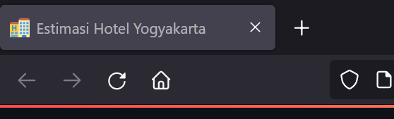
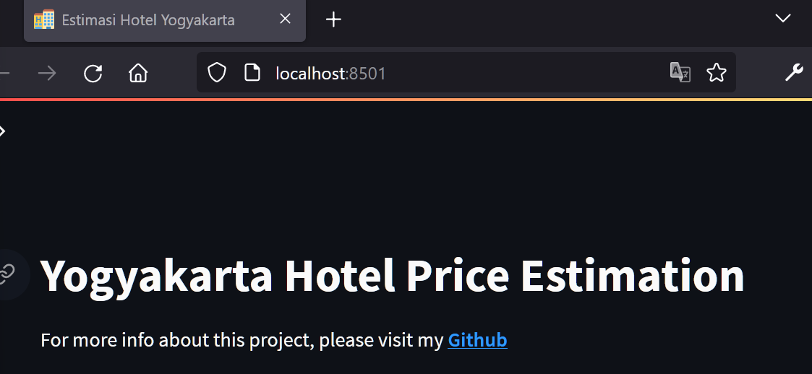
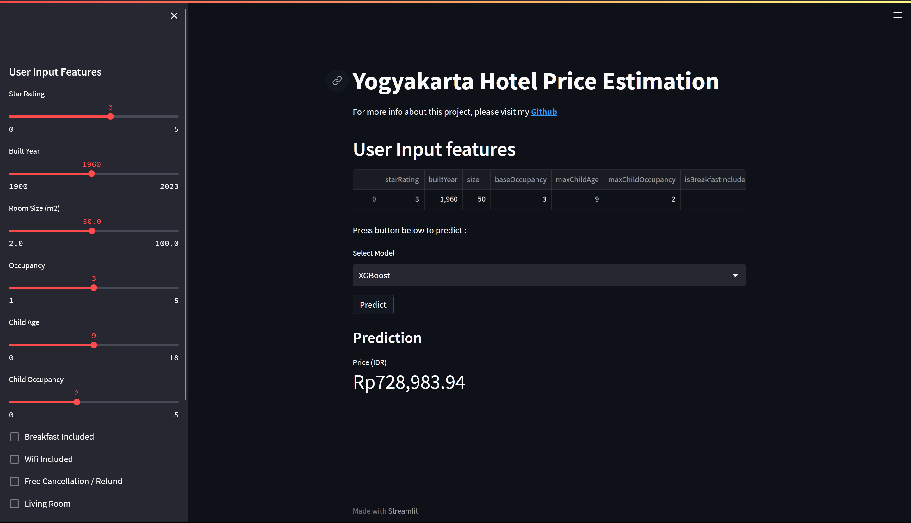

# streamlit umumnya diinisialisasi dengan 'st'
import streamlit as st11 Deployment
11.1 Pendahuluan
Deployment model data science dilakukan untuk memastikan model yang dibuat dapat digunakan oleh orang lain. Deployment model data science dapat dilakukan dengan berbagai cara, salah satunya adalah dengan menggunakan Streamlit.
Streamlit adalah sebuah framework yang dapat digunakan untuk membuat aplikasi web dengan menggunakan bahasa pemrograman Python. Dengan menggunakan Streamlit, deployment model data science dapat dilakukan dengan mudah dan cepat.
11.2 Instalasi Streamlit

Untuk menginstall Streamlit, dapat dilakukan dengan menggunakan perintah berikut pada command prompt atau terminal:
pip install streamlit11.3 Membuat Aplikasi Web dengan Streamlit
Setelah Streamlit terinstall, langkah selanjutnya adalah membuat aplikasi web dengan menggunakan Streamlit. Untuk membuat aplikasi web dengan Streamlit, dapat dilakukan dengan cara membuat file python baru dengan nama app.py. Kemudian, pada file tersebut, tuliskan kode berikut:
11.4 API Streamlit
API Streamlit dapat digunakan untuk membuat aplikasi web dengan Streamlit. API Streamlit dapat dilihat pada dokumentasi Streamlit. Berikut adalah beberapa API Streamlit yang dapat digunakan untuk membuat aplikasi web dengan Streamlit:
11.4.1 Page Config
st.set_page_config dapat digunakan untuk mengatur konfigurasi halaman. Beberapa konfigurasi yang dapat diatur adalah judul halaman, layout halaman, dan lain-lain. Berikut adalah contoh penggunaan st.set_page_config untuk mengatur judul halaman:
st.set_page_config(
page_title="Estimasi Hotel Yogyakarta",
page_icon=':hotel:' # :hotel: merupakan nama emoji
)
11.4.2 Write
st.write dapat digunakan untuk menampilkan teks, dataframe, dan visualisasi. Format penulisan dalam method ini adalah format markdown. Berikut adalah contoh penggunaan st.write untuk menampilkan teks:
st.title('Yogyakarta Hotel Price Estimation')
st.write(
'For more info about this project, please visit my [**Github**](https://github.com/Liore-S/hotel-yoyakarta)')
11.4.4 Input User
Untuk memasukkan elemen input user dalam sidebar dapat dilakukan dengan menggunakan st.sidebar.slider, st.sidebar.selectbox dan lain sebagainya . Berikut adalah contoh input data pada sidebar:
def user_input_features():
starRating = st.sidebar.slider('Star Rating', 0, 5, 3)
builtYear = st.sidebar.slider('Built Year', 1900, 2023, 1960)
size = st.sidebar.slider('Room Size (m2)', 2.0,
100.0, 50.0, 0.1, format='%0.1f')
occupancy = st.sidebar.slider('Occupancy', 1, 5, 3)
childAge = st.sidebar.slider('Child Age', 0, 18, 9)
childOccupancy = st.sidebar.slider('Child Occupancy', 0, 5, 2)
breakfast = st.sidebar.checkbox('Breakfast Included')
wifi = st.sidebar.checkbox('Wifi Included')
refund = st.sidebar.checkbox('Free Cancellation / Refund')
livingRoom = st.sidebar.checkbox('Living Room')
hotelFacilitie = st.sidebar.multiselect(
'Hotel Facilities', (hotelFacilities))
roomFacilitie = st.sidebar.multiselect(
'Room Facilities', (roomFacilities))
pointInterest = st.sidebar.multiselect(
'Point of Interest', (nearestPoint))
# Handle Checkbox
breakfast = 1 if breakfast else 0
wifi = 1 if wifi else 0
refund = 1 if refund else 0
livingRoom = 1 if livingRoom else 0
# Handle Multiselect
hotelFacilitie = ','.join(hotelFacilitie)
roomFacilitie = ','.join(roomFacilitie)
pointInterest = ','.join(pointInterest)
data = {
'starRating': starRating,
'builtYear': builtYear,
'size': size,
'baseOccupancy': occupancy,
'maxChildAge': childAge,
'maxChildOccupancy': childOccupancy,
'isBreakfastIncluded': breakfast,
'isWifiIncluded': wifi,
'isRefundable': refund,
'hasLivingRoom': livingRoom,
'hotelFacilities': hotelFacilitie,
'roomFacilities': roomFacilitie,
'nearestPoint': pointInterest
}
features = pd.DataFrame(data, index=[0])
return features
st.sidebar.header('User Input Features')
df = user_input_features()- slider digunakan untuk memasukkan elemen input user berupa angka
- checkbox digunakan untuk memasukkan elemen input user berupa boolean
- multiselect digunakan untuk memasukkan elemen input user berupa list
11.4.5 Handling Input User
Setelah input user diterima, input user perlu diubah menjadi bentuk yang dapat digunakan oleh model. Untuk model ini perlu dilakukan multi-hot encoding untuk kolom fasilitas hotel, fasilitas kamar, dan point of interests, Berikut code untuk melakukan multi-hot encoding:
# create function to create dataframe with 0 and 1 value
def create_df(dfOri, df_name, df, prefix):
value = prefix+dfOri[df_name][0]
for i in range(0, len(df.columns)):
column_name = df.columns[i]
if column_name in value:
df.loc[0, column_name] = 1
else:
df.loc[0, column_name] = 0
return df
# create empty dataframe for hotelFacilities, roomFacilities, nearestPoint, with column name from hotelFacilities, roomFacilities, nearestPoint
roomFacilities_df = pd.DataFrame(columns=roomFacilities)
hotelFacilities_df = pd.DataFrame(columns=hotelFacilities)
nearestPoint_df = pd.DataFrame(columns=nearestPoint)
create_df(df, 'roomFacilities', roomFacilities_df, 'Room_')
create_df(df, 'hotelFacilities', hotelFacilities_df, 'Hotel_')
create_df(df, 'nearestPoint', nearestPoint_df, 'Point_')
df = df.drop(['hotelFacilities', 'roomFacilities', 'nearestPoint'], axis=1)
df = pd.concat([df, hotelFacilities_df, roomFacilities_df, nearestPoint_df], axis=1)
# change all column data type to unit8 except the first column
df = df.astype({col: 'float64' for col in df.columns[:2]})
df = df.astype({col: 'uint8' for col in df.columns[2:]})Code diatas digunakan untuk membuat data input user menjadi sama pada data yang dilakukan training. Hal ini dilakukan agar model dapat melakukan prediksi dengan benar.
11.4.6 Pengecekan Dataframe
Setelah data input user diubah menjadi dataframe, perlu dilakukan pengecekan apakah dataframe tersebut sudah sesuai dengan dataframe yang digunakan untuk training. Berikut adalah code untuk mengecek dataframe:
# check df column order with model column order using colOri, if not the same print the worng column
# colOri merupakan kolom pada data training yang di export menggunaka pickle
colOri = colOri[1:]
if df.columns.tolist() == colOri.all():
st.info("Column order is correct.")
else:
mismatched_columns = [(idx, df_col, model_col) for idx, (df_col, model_col) in enumerate(zip(df.columns.tolist(), colOri)) if df_col != model_col]
if len(mismatched_columns) > 0:
st.warning("The order of the columns is not the same as the model. Mismatched columns:")
for idx, df_col, model_col in mismatched_columns:
st.write(f"At index {idx}: DataFrame column '{df_col}' - Model column '{model_col}'")
Warning
Urutan kolom hasil input user harus sama dengan urutan kolom pada data training. Jika tidak, maka akan terjadi error atau membuat hasil prediksi menjadi tidak valid.
11.4.7 Prediksi
Untuk melakukan prediksi, model perlu di-load terlebih dahulu. Berikut adalah code untuk melakukan prediksi:
# Load Model
xgbModel = pickle.load(open('Model/xgbModel.pkl', 'rb'))
svrModel = pickle.load(open('Model/svrModel.pkl', 'rb'))
rfModel = pickle.load(open('Model/rfModel.pkl', 'rb'))Dalam contoh ini digunakan 3 model, yaitu XGBoost, Support Vector Regression, dan Random Forest. Untuk melakukan prediksi, dapat dilakukan dengan menggunakan code berikut:
st.write('Press button below to predict :')
model = st.selectbox('Select Model', ('XGBoost', 'Random Forest', 'SVR'))
if model == 'XGBoost' and st.button('Predict'):
bar = st.progress(0)
status_text = st.empty()
for i in range(1, 101):
status_text.text("%i%% Complete" % i)
bar.progress(i)
time.sleep(0.01)
# Formatting the prediction
prediction = xgbModel.predict(df)
formaString = "Rp{:,.2f}"
prediction = float(prediction[0])
formatted_prediction = formaString.format(prediction)
time.sleep(0.08)
# print the prediction
st.subheader('Prediction')
st.metric('Price (IDR)', formatted_prediction)
# empty the progress bar and status text
time.sleep(0.08)
bar.empty()
status_text.empty()
elif model == 'Random Forest' and st.button('Predict'):
bar = st.progress(0)
status_text = st.empty()
for i in range(1, 101):
status_text.text("%i%% Complete" % i)
bar.progress(i)
time.sleep(0.01)
# Formatting the prediction
prediction = rfModel.predict(df)
formaString = "Rp{:,.2f}"
prediction = float(prediction[0])
formatted_prediction = formaString.format(prediction)
time.sleep(0.08)
# print the prediction
st.subheader('Prediction')
st.metric('Price (IDR)', formatted_prediction)
# empty the progress bar and status text
time.sleep(0.08)
bar.empty()
status_text.empty()
elif model == 'SVR' and st.button('Predict'):
bar = st.progress(0)
status_text = st.empty()
for i in range(1, 101):
status_text.text("%i%% Complete" % i)
bar.progress(i)
time.sleep(0.01)
# Formatting the prediction
prediction = svrModel.predict(df)
formaString = "Rp{:,.2f}"
prediction = float(prediction[0])
formatted_prediction = formaString.format(prediction)
# prediction = rfModel.predict(df)
time.sleep(0.08)
# print the prediction
st.subheader('Prediction')
st.metric('Price (IDR)', formatted_prediction)
# empty the progress bar and status text
time.sleep(0.08)
bar.empty()
status_text.empty()11.4.8 Hasil akhir
Unutuk contoh hasil akhir dapat dilihat pada link berikut: Sreamlit hotel Yogyakarta
